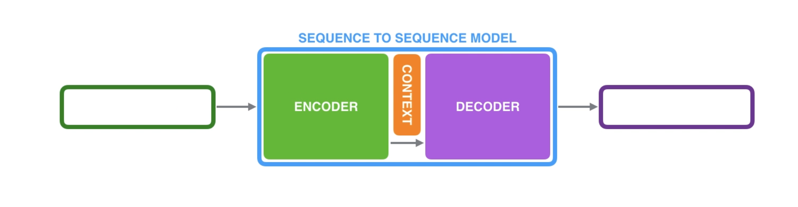

Attention 101
A sequence-to-sequence model is a model that takes a sequence of items (words, letters, features of an images, etc.) and outputs another sequence of items. Under the hood, the model is composed of an encoder and a decoder..
- The encoder processes each item in the input sequence, it compiles the information it captures into a vector (called the context).
- After processing the entire input sequence, the encoder sends the context over to the decoder, which begins producing the output sequence item by item.

Context
The context is a vector (an array of numbers, basically) in the case of machine translation. The encoder and decoder tend to both be recurrent neural networks.

Hint
Look at the hidden states for the encoder, and notice how the last hidden state is actually the context we pass along to the decoder.
The decoder also maintains a hidden state that it passes from one time step to the next.
Attention
The context vector turned to be a bottleneck fo these types of models. It made it challenging for the models to deal with long sequences. A solution was proposed in
- Neural Machine Translation by Jointly Learning to Align and Translate
- Effective Approaches to Attention-based Neural Machine Translation
They introduced and refined a technique called Attention, which highly improved the quality of machine translation systems. Attention allows the model to focus on the relevant parts of the input sequence as needed.

At time step 7, the attention mechanism enables the decoder to focus on the word "étudiant" ("student" in french) before it generates the English translation.
Note
The ability to amplify the signal from the relevant part of the input sequence makes attention models produce better results than models without attention.
An attention model differs from a classic sequence-to-sequence model in both encoding and decoding.
Encoding
The encoder passes a lot more data to the decoder. Instead of passing the last hidden state of the encoding stage, the encoder passes all the hidden states to the decoder.

Decoding
An attention decoder does an extra step before producing its output. In order to focus on the parts of the input that relevant to this decoding time step, the decoder does the following:
- Look at the set of encoder hidden states it received -- each encoder hidden state is most associated with a certain word in the input sequence.
- Given each hidden state a score (ignore how the scoring is done for now).
- Multiply each hidden state by its softmaxed score, thus amplifying hidden states with high scores, and drowning out hidden states with low scores.

The scoring exercise is done at each time step on the decoder side.
- The attention decoder RNN takes in the embedding of
<END>token, and an initial decoder hidden state. - The RNN processes its inputs, producing an output and a new hidden state vector (
h4). The output is discarded. - Attention Step: we use the encoder hidden states and the
h4vector to calculate a context vector (C4) for this time step. - We concatenate
h4andC4into one vector. - We pass this vector through a feed forward neural network (one trained jointly with the model).
- The output of the feed forward neural networks indicates the output word of this time step.
- Repeat for the next time steps.